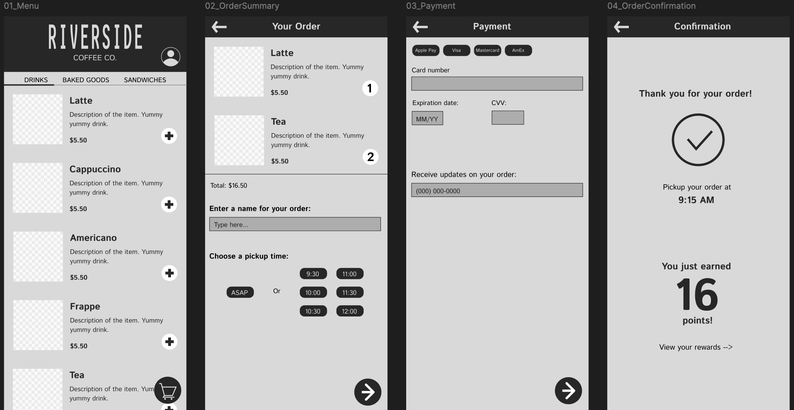
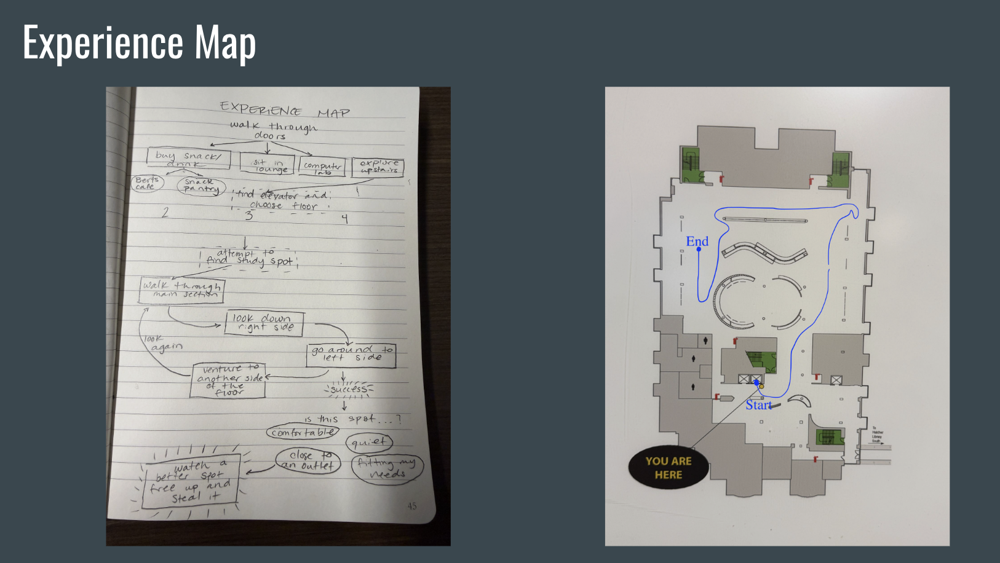

Week 4: Prototyping and Interaction Field Study
Prototyping
We worked with Figma to create a low-fidelity prototype of an assigned service. I chose to make a mobile order app for Riverside Coffee Co. I began by sketching out my frames to get an idea of what I wanted my final product to look like. This helped me organize information and map out the flow before I got caught up in design and interactive details. Once I began designing in Figma, I found myself struggling with each decision point and where to put each element. I hadn’t thought about how, when you start with a blank frame, it is now your decision where to put every single component of your design. I drew from prior experiences with mobile order apps, which helped with the basic typical structure, but there are small differences from platform to platform, and I had a hard time deciding on the small details, like which corner to put a button in or how to format the payment information.

Interaction Field Study
We were tasked with selecting and observing an experience and performing a field study on the interactions between the user and that experience. I chose to visit the Shapiro Library, with the goal of finding a place to sit down and work. It was interesting because there is plenty of information available to the user as you move throughout the space, yet I always find the experience to be full of uncertainty. There are many possible spaces to go, and the library readily provides information about each space at multiple points, yet once you reach your desired space, one huge question remains. Will I find a place to sit? In other words, will I actually be able to use this space? I documented a variety of information provided via signs and screens, as well as decision points, an experience map, and the path I had to walk through the library before eventually finding an available seat.
